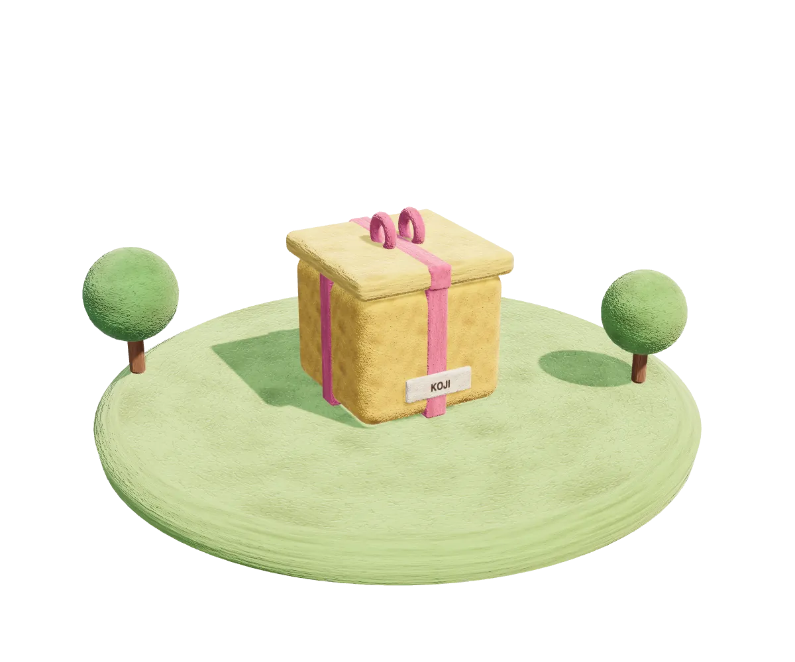

Creator platform · Games
Koji
Gometa · interactive mini-apps
Most of the templates creators used to build Kojis, plus many games across the web game stack.
What I built
- Built most of the creator templates on the platform.
- Shipped many games across the web game stack.
- Worked across multiple frameworks and game engines.
Context
Frameworks and engines spanned React, Svelte, Vue and Angular alongside Three.js, Phaser, PixiJS, PlayCanvas, Unity and Godot.
Stack
SvelteThree.jsPhaserUnityReactGodot